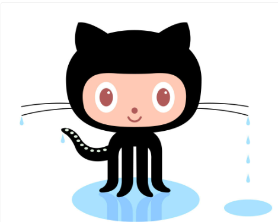

| Home |
PVCC |
W3 Schools |
Contact Us |
All About GitHub
|
| Question |
Answer |
>
| What is a version control system? |
A version control system, or VCS, tracks the history of changes as people and teams collaborate on projects together. |
| What is Git and GitHub |
Git and GitHub are common tools used in programming. They help you manage different versions of your code and collaborate with other developers. |
| What is the Difference between Git and GitHub? |
Git is a version control system that allows developers to track changes in their code. GitHub is a web-based hosting service for git repositories. |
| Who started GitHub and how? |
The site was launched in April 2008 by Tom Preston-Werner, Chris Wanstrath, and PJ Hyett after it had been made available for a few months prior as a beta release. When Chris and Tom started working on GitHub in late 2007, Git was largely unknown as a version control system. |
| What company owns GitHub? |
Microsoft Corp |
| How much does a gitHub account cost? |
Free |
| What is the octocat? |
Its the mascot of the source-code hosting service GitHub |
| Term |
Definition |
| System Software |
A repository is the most basic element of GitHub. It's a place where you can store your code, your files, and each file's revision history. |
| repository |
Utility Software, within the context of system software, refers to a set of specialized programs and tools designed to perform specific
tasks that help manage and optimize a computer system. Utility software is typically used to enhance system performance, improve security,
and streamline various maintenance and administrative tasks. |
| commit |
Similar to saving a file that's been edited, a commit records changes to one or more files in your branch. |
| Fork |
A fork is a new repository that shares code and visibility settings with the original “upstream” repository. |
| Push |
The git push command is used to upload local repository content to a remote repository. |
| Pull Request |
Pull requests let you tell others about changes you've pushed to a branch in a repository on GitHub. |
| Workflow |
A workflow is a configurable automated process that will run one or more jobs. |
| Issue |
Issues let you track your work on GitHub, where development happens |
| Raw Button |
With the raw view, you can view or copy the raw content of a file without any styling. |
| Blame Button |
The git blame command is used to examine the contents of a file line by line and see when each line was last modified and who the author of the modifications was. |